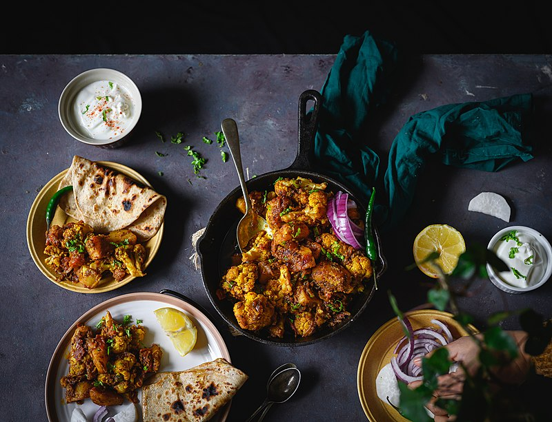
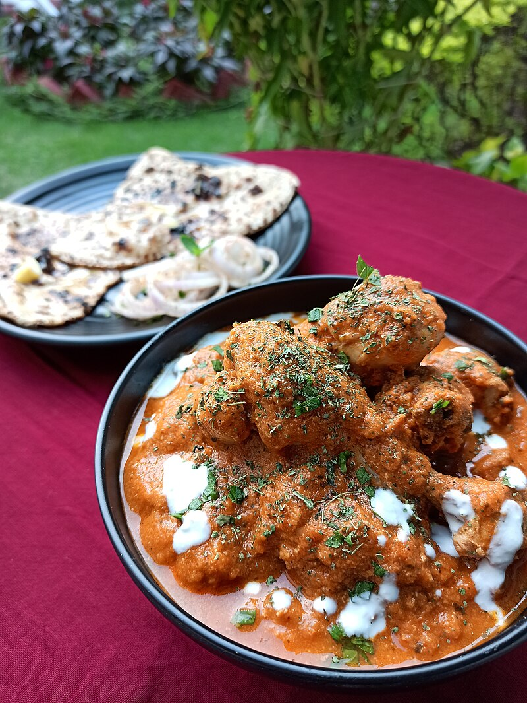

Learn the spices, stock your pantry, and cook authentic Indian food at home — one dish at a time.
Indian food is spice-driven. Master the building blocks and you can make anything.
22 spices with descriptions, beginner tips, and exactly how much to use. Understanding spices is the key to everything.
Spice Guide →17 core ingredients — what they are, how to store them, and what to substitute if you can't find them.
Ingredients →18 recipes with beginner-friendly, detailed instructions. Start with Dal Tadka and build from there.
All Recipes →These four dishes teach the fundamental techniques used in most Indian cooking.

Velvety tomato-cream sauce, charred chicken, and the kasuri methi secret — restaurant quality from your own kitchen in under an hour.
Cook Butter Chicken →These 10 items cover 80% of Indian recipes. Get these first.
Things that will save you from common beginner mistakes.
When oil separates from the tomato-onion mixture, the masala is ready. This is the most important sign in Indian cooking.
Caramelized golden-brown onions are the flavor foundation of most North Indian curries. 12–15 minutes on medium heat, not 5.
You can always add more chili powder, but you can't take it out. Start with half the amount in the recipe and taste as you go.
This aromatic blend is a finishing spice. Add it in the last 2–3 minutes of cooking to preserve its delicate fragrance.
Fat-soluble flavor compounds in spices release best in oil or ghee. Adding spices to water won't give you the same depth.
Indian cooking is intuitive. Taste at every stage. A final squeeze of lemon juice brightens almost any curry that tastes flat.